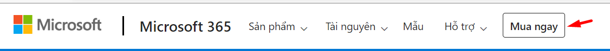

When creating web pages, user experience should be top of mind. That means that simplicity, visual hierarchy, and navigability must be prioritized in your build process
These guidelines for exceptional web design and usability have the same goal: to make it easy for visitors to find the information they’re looking for or complete the action that they set out to accomplish. Legible typefaces, a consistent color scheme, and breadcrumbs are just a few design elements that can improve the user experience on your site.
To make the drop cap line up with the top of the first line of the paragraph and the left margin of the paragraph, you can use the float and line-height property. Set the float property to left and the line height to 85%. By setting the line height to 85% instead of 100%, you align the top of the capital “T” with the top of the lowercase “h.”
Then, to ensure the drop cap and paragraph do not overlap, set a fixed width for the span. Using 0.7em, or .7 times the width of the font of the paragraph, will give the illusion of padding between the drop cap’s right and bottom edge and the paragraph. To make the drop cap the size of three lines of text, set the font-size to 400%. Note that 400% of 16px (the default font-size in W3School’s Tryit Editor) is 64px.
A drop cap is short for “dropped capital.” It’s the large capital letter you sometimes see at the beginning of a paragraph in print and digital publications. This decorative element is usually the size of two or more lines of text in a paragraph.
In The Atlantic, drop caps are used to break up sections of an article and signify the starting point of each for the reader. They take up the space of three lines of text, as seen in the excerpt from “The American Nightmare” by Ibram X. Kendi below.
The New Yorker uses drop caps for a similar purpose on its site, but at a smaller size. Its drop caps take up two lines instead of three, as seen in the excerpt from “How Pandemics Wreak Havoc—and Open Minds” by Lawrence Wright below.
The first way is to wrap the first letter of a paragraph with span tags. You can then style the span, without affecting the rest of the paragraph, by using a CSS selector. Below, we’ll use the type selector span.
 Internet Explorer Moxilla firefox Gooogle Chrome